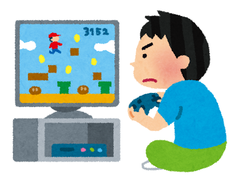
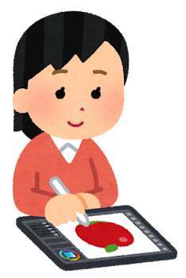
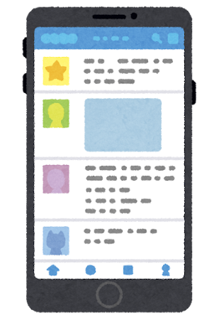

素材提供 いらすとや（みふねたかし）。
5点を繰り返し使用しています。
写真素材はスライドから取り外しました。
 | ゲームに熱中している男の子のイラスト |
 | タブレットで絵を描く人のイラスト（女性） |
| スマートフォンで写真を撮る人のイラスト（男性・縦） | |
| 水を飲んでいる男の子のイラスト | |
 | SNSが表示されたスマートフォンのイラスト |
利用規定を2026年10月19日に確認。
著作権は作者に帰属します。
素材そのものを配布する用途には使いません。
今回の抹茶色のMarpテンプレートは維持しています。
過去の利用者数・投稿数・個人情報は流用していません。
Misskeyのノートを参考にした架空の投稿画面を作りました。
表示名は「まっちゃてぃー。」です。
投稿文は説明用の創作で、実投稿の引用ではありません。
2つのSNSの例の後に、5つのSNSがつながる図を置いています。
図はTablerの封筒アイコンが3.5秒周期で流れ続けます。
フォローなどの関係に応じた配信の例であり、全投稿を全SNSへ一斉送信する図ではありません。
PDFと動きを減らす設定では静止表示になります。
導入2分、投稿例2分、仕組み5分、休憩1分、楽しみ方4分、始め方3分、締め2分、余裕1分。
一言のページや段階表示は短く送り、複数SNSの図には30秒程度使います。
Tabler Icons（MIT License）。
MisskeyのMkNote.vueで使われるarrow-back-up、repeat、plus、dotsに揃えています。
配信図にはmailを使用しています。
SVGとライセンスをslides/assets/tablerに保存しています。
提供された「本番環境のDBを吹き飛ばした話」2ページから本人のイラストを抽出しました。
自己紹介は同資料2〜4ページの「SNS（が好き）な人」、Misskeyへの貢献、まっちゃすきー。運営と、「タイトルページ」2ページの趣味を反映しています。
当時の学年や投稿数は流用していません。
2026年10月19日。
提供された3つのPDFの全ページと、以前取得した登壇動画の自動字幕を見直しました。
自己紹介の直後に「SNSが大好き」を置き、聴衆への問いかけに続けています。
投稿例と配信図で人物・投稿内容を統一しました。
本文や操作ボタンを固定し、リアクションだけを追加しています。
まとめも先の一文の位置を保ったまま二文目を追加しています。
全36ページのレイアウトを画像で確認し、投稿例の前後で位置が変わらないことをブラウザーで測定しました。
台本の読み上げや20分の実地リハーサルは行っていません。
話す内容をその場で組み立てる本人の方針に合わせ、説明文や必須の台本は追加していません。